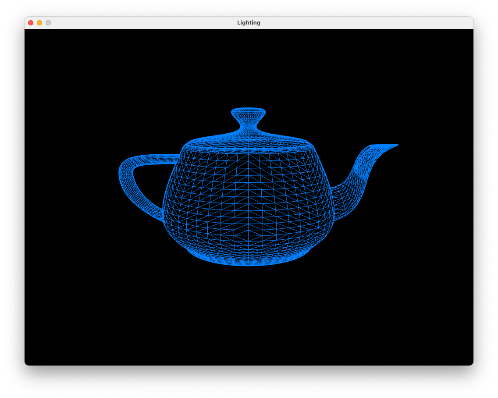
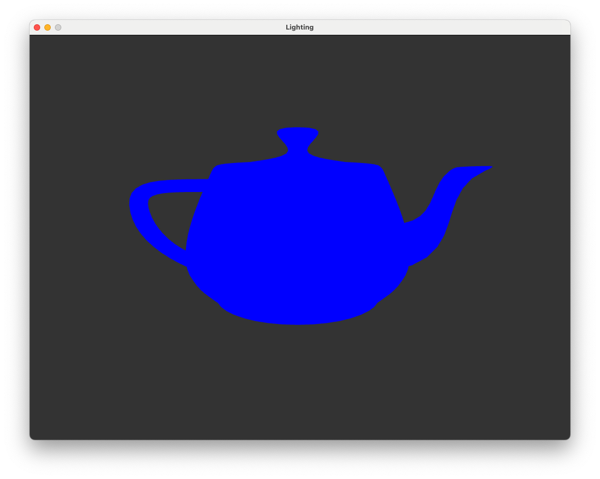
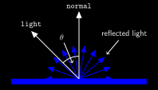
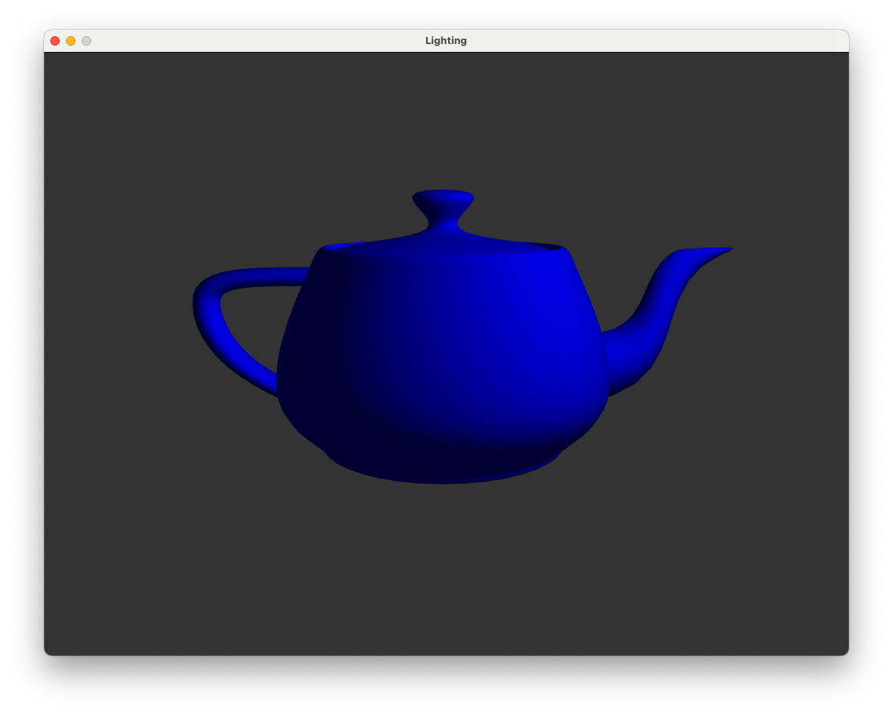
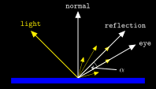
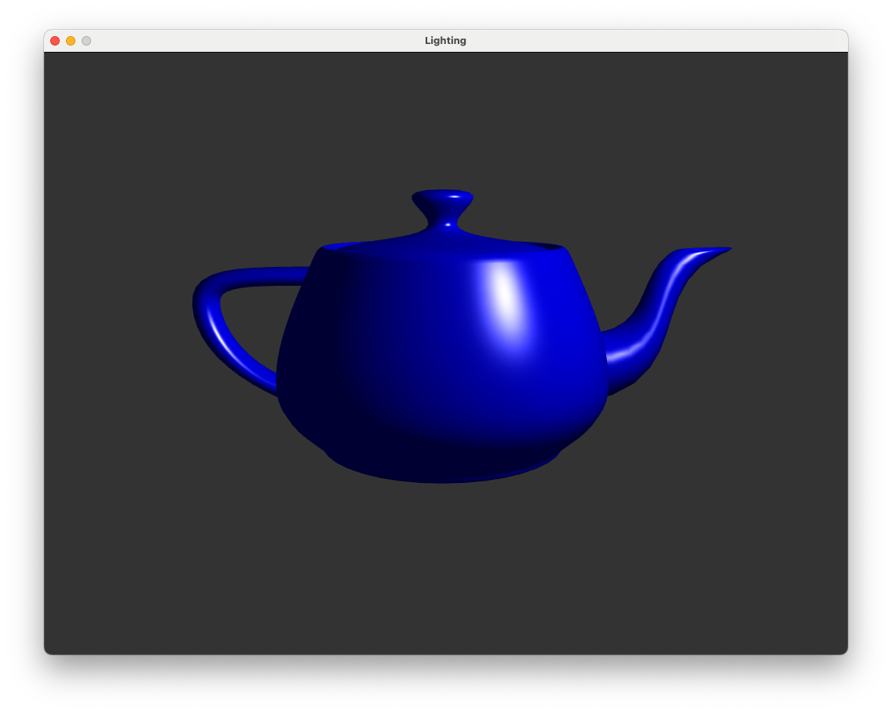
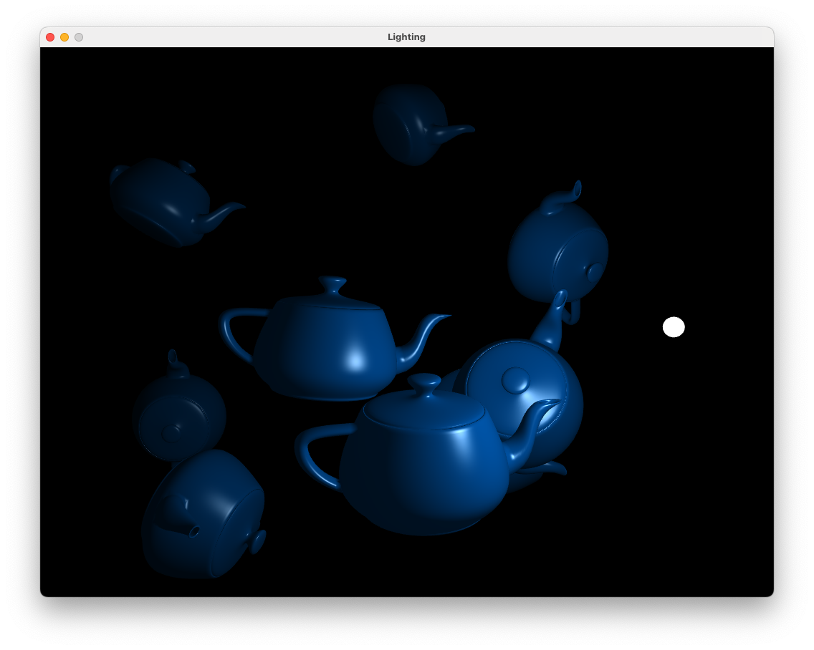

8. Lighting#
In this lab we will be looking at adding a basic lighting model to our application. Lighting modelling is in itself a huge topic within the field of computer graphics and modern games and movies can look very lifelike thanks to some very clever (and complicated) techniques. Lighting models come in two main types: local illumination and global illumination:
local illumination - the colour and brightness of individual points on a surface are determined by the light emanating from one or more light sources.
global illumination - the colour and brightness of individual points on a surface are determine both by the light emanating from light sources in addition to light that is reflected off of other objects in the scene.
Here we will be applying a local illumination model since they are easier to apply than global illumination and quicker to computer. The downside is that they don’t produce a rendering as realistic than with global illumination.
Download and build the project files for this lab.
Go to https://github.com/jonshiach/Lab08_Lighting and follow the instructions to download and build the project files.
Open the project file
Lab08_Lighting.sln(orLab08_Lighting.xcodeprojon macOS) set the Lab08_Lighting project as the startup project.Visual Studio: right-click on the Lab08_Lighting project and select Set as Startup Project.
Xcode: Click on the target select dropdown (to the right of the name of the project at the top of the window) and select Lab08_Lighting as the target.
Build the project by pressing CTRL + B (or ⌘B on Xcode) which should build the project without errors. Run the executable by pressing F5 (or ⌘R on Xcode).
Compile and run the project and you will see the window below showing a wireframe representation of the Utah teapot[1].
{kind=link}

The teapot has been rendered as a wireframe model since, in the absence of light and shadow, we wouldn’t be able to tell that it was in fact a 3D model. We can turn of the wireframe rendering by commenting out the line glPolygonMode(GL_FRONT_AND_BACK, GL_LINE);. Do this and you should see the following.
{kind=link}

8.1. The Model class#
If you take a look at the source code in the Lab08_Lighting/source folder you will notice that in addition to the classes introduced in previous labs (Texture, Shader and Camera) we have an addition class called Model which is defined in the model.hpp and model.cpp files. The Model class has been written so that we can load the vertex and texture co-ordinates from external files rather than having to define these in our code. The methods of interest are:
Model <model name>(<path to .obj file>);- the constructor instantiates a Model object, loads the vertices from an.objfile and setups and binds the necessary buffers.<model name>.addTexture(<path to .bmp file>, <type of texture>);- a method to apply a texture to the model.<model name>.draw(<shader program ID>);- binds the textures and instructs OpenGL to draw the model.<model name>.deleteBuffers();- deletes the VAO and the buffers used by the model.
8.1.1. Wavefront (.obj) files#
The Model class includes a private member function called loadObj() written by contributors of opengl-tutorial.org which loads in a wavefront (.obj) file. A wavefront file is one of the many different types of file that is used to describe 3D models in computer graphics. In the Lab08_Lighting/objects/ folder you will see some .obj files. Open the cube.obj file using a text editor and you will see the following.
# Blender 4.0.2
# www.blender.org
mtllib cube.mtl
o Cube
v 1.000000 1.000000 -1.000000
v 1.000000 -1.000000 -1.000000
v 1.000000 1.000000 1.000000
v 1.000000 -1.000000 1.000000
v -1.000000 1.000000 -1.000000
v -1.000000 -1.000000 -1.000000
v -1.000000 1.000000 1.000000
v -1.000000 -1.000000 1.000000
vn -0.0000 1.0000 -0.0000
vn -0.0000 -0.0000 1.0000
vn -1.0000 -0.0000 -0.0000
vn -0.0000 -1.0000 -0.0000
vn 1.0000 -0.0000 -0.0000
vn -0.0000 -0.0000 -1.0000
vt 0.875000 0.500000
vt 0.625000 0.750000
vt 0.625000 0.500000
vt 0.375000 0.990255
vt 0.375000 0.750000
vt 0.625000 0.008121
vt 0.375000 0.250000
vt 0.375000 0.008121
vt 0.375000 0.500000
vt 0.125000 0.750000
vt 0.125000 0.500000
vt 0.625000 0.250000
vt 0.875000 0.750000
vt 0.625000 0.988631
s 0
usemtl Material
f 5/1/1 3/2/1 1/3/1
f 3/2/2 8/4/2 4/5/2
f 7/6/3 6/7/3 8/8/3
f 2/9/4 8/10/4 6/11/4
f 1/3/5 4/5/5 2/9/5
f 5/12/6 2/9/6 6/7/6
f 5/1/1 7/13/1 3/2/1
f 3/2/2 7/14/2 8/4/2
f 7/6/3 5/12/3 6/7/3
f 2/9/4 4/5/4 8/10/4
f 1/3/5 3/2/5 4/5/5
f 5/12/6 1/3/6 2/9/6
The vertex and face data is given in lines with the following abbreviations:
v- the (x, y, z) co-ordinates of a vertexvn- the (nx, ny, nz) normal vector for the vertexvt- the (u, v) texture co-ordinatesf- indices of the vertices of a face. Each face is defined by 3 vertices so we have 3 sets of 3 values. The face vertices are of the formv/vt/vnso3/2/1refers to a vertex where the co-ordinates are given by the 3rdvline, the texture co-ordinates are given by the 2ndvtline and the normal vector is given by the 1stvnline.
Note
The loadObj() private member function in the Model class is quite simplistic and we need to make sure our .obj file is in the correct form.
8.1.2. Creating an .obj file in Blender#
To create an .obj file we can use the popular open source application Blender (this is installed on the machines in the Dalton building).
Create your object in blender and sort out the material textures, UV co-ordinates etc. (lots of tutorials on youtube to help you with this)
Click on File > Export > Wavefront (.obj)
Make sure Include Normals, Include UVs and Triangular Faces are selected.
Navigate to your chosen folder (here I used
Lab08_Lighting/objects/) and give it an appropriate name.
8.2. Phong’s lighting model#
Phong’s lighting model is a local illumination model that simulates the interaction of light falling on surfaces. The colour and brightness of a point on a surface is based on three components
ambient reflection - a simplified model of light that reflects of all objects in a scene
diffuse reflection - describes the direct illumination of a surface by a light source based on the angle between the light source direction and the normal vector to the surface
specular reflection - models the shiny highlights on a surface caused by a light source based on the angle between the light source direction, the normal vector and the view direction
The colour of a pixel on the surface is calculated as a sum of these components, i.e.,
8.2.1. Ambient reflection#
Ambient reflection is light that is scatters off of all surfaces in a scene. To model this we use a massive cheat, we assume that all surfaces in a scene are lit equally with the same amount of intensity. The equation to do this is
where \(k_a\) is the ambient reflection constant that determines the amount of ambient lighting used and \(I_a\) and \(I_o\) are the colours of the ambient light and object respectively. Lets create a light source and calculate the ambient lighting. We need to create a vector for the light colour and send it to the shaders using a uniform. Add the following code to the main.cpp file just before the render loop.
// Define lighting properties
glm::vec3 lightColour = glm::vec3(1.0f, 1.0f, 1.0f);
glm::vec3 ambientColour = glm::vec3(1.0f, 1.0f, 1.0f);
We have used a 3-element vector to containing the RGB values for our light source and ambient colour so in this case it is pure white (a bit boring I know so feel free to experiment with different colours). In the render loop add the following code to send the lightColour to the shaders.
// Send light source vectors to the shaders
glUniform3fv(glGetUniformLocation(shaderID, "lightColour"), 1, &lightColour[0]);
glUniform3fv(glGetUniformLocation(shaderID, "ambientColour"), 1, &ambientColour[0]);
Then edit fragmentShader.frag so that it takes in the lightColour uniform and calculates the ambient reflection.
#version 330 core
// Interpolated values from the vertex shaders
in vec2 UV;
in vec3 FragmentPosition;
in vec3 Normal;
// Output data
out vec3 colour;
// Uniforms
uniform sampler2D Texture;
uniform vec3 lightColour;
uniform vec3 ambientColour;
// Constants
float ka = 0.5;
void main ()
{
// Object colour (not using texture mapping yet)
//vec3 objectColour = texture(Texture, uv).xyz;
vec3 objectColour = vec3(0.0f, 0.0f, 1.0f);
// Ambient
vec3 ambient = ka * ambientColour * objectColour;
// Fragment colour
colour = ambient;
}
Here we have used an \(k_a\) value of 0.5. Changing this value will make the colour of the teapot lighter or darker.
8.2.2. Diffuse reflection#
When a light ray hits a surface it is reflected in a direction such that the angle between the reflected ray and the surface normal is the same as the angle between the light ray and the surface normal (known as the angle of incidence). When multiple light rays hit a rough surface they are scattered in all directions since the surface normals across the surface vary, this is diffuse reflection.
To model diffuse reflection we assume that light is reflected equally in all directions (Fig. 8.4).
{kind=link}

Fig. 8.4 Diffuse reflection scatters light equally in all directions.#
The amount of reflected light is modelled using the cosine of the angle of incidence \(\tt theta\). When the light source is directly in front of the surface then \(\tt theta\) is close to zero so \(\cos(\tt theta)\) is close to 1. If the light source is close to being inline with the surface then \(\tt theta\) is close to 90\(^\circ\) and \(\cos(\tt theta)\) is close to 0. So a model of diffuse reflection is
where \(k_d\) is the diffuse reflection constant that determine the amount of diffuse lighting used, \(I_d\) is the colour of the diffuse light source and \(\theta\) is the angle between the \(\tt light\) and \(\tt normal\) vectors. Recall that the angle between two vectors is related by dot product so if the \(\tt light\) and \(\tt normal\) vectors are unit vectors then \(\cos(\theta) = \tt light \cdot normal\). If the light source is behind the surface then no light should be reflected so we limit the value of \(\cos(\theta )\) between 0 and 1.
Lets define position for a light source, just after where we defined the lightColour vector, add the following.
glm::vec3 lightPosition = glm::vec3(2.0f, 2.0f, 2.0f);
Now for the shaders. The vertex shader calculates the position of the fragment in the screen space and since our lighting calculations are done in the view space we need to calculate the view space fragment co-ordinates and the view space normal. Edit vertexShader.vert so that is looks like the following.
#version 330 core
// Input vertex data
layout(location = 0) in vec3 position;
layout(location = 1) in vec2 uv;
layout(location = 2) in vec3 normal;
// Output data
out vec2 UV;
out vec3 FragmentPosition;
out vec3 Normal;
// Uniforms
uniform mat4 model;
uniform mat4 view;
uniform mat4 projection;
void main()
{
// Output vertex postion
gl_Position = projection * view * model * vec4(position, 1.0);
// Output (u,v) co-ordinates
UV = uv;
// Output view space fragment position and normal
FragmentPosition = vec3(view * model * vec4(position, 1.0));
Normal = mat3(transpose(inverse(view * model))) * normal;
}
We also need to calculate the view space co-ordinates for the lightPosition vector. Since the light positions are the same for all fragments we do this in our main.cpp program and use a uniform to send it to the fragment shader.
glm::vec3 viewSpaceLightPosition = glm::vec3(view * glm::vec4(lightPosition, 1.0f));
glUniform3fv(glGetUniformLocation(shaderID, "lightPosition"), 1, &viewSpaceLightPosition[0]);
Add a float constant with the value kd = 0.7 to the fragment shader and in the main() function add the following to calculate diffuse reflection.
// Diffuse
vec3 normal = normalize(Normal);
vec3 light = normalize(lightPosition - FragmentPosition);
float cosTheta = max(dot(normal, light), 0);
vec3 diffuse = kd * objectColour * lightColour * cosTheta;
Finally add the diffuse reflection to the ambient reflection to calculate the fragment colour.
// Fragment colour
colour = ambient + diffuse;
The result of applying ambient and diffuse reflection is shown in Fig. 8.5.
{kind=link}

Fig. 8.5 Ambient and diffuse reflection: \(k_a = 0.2\), \(k_d = 0.7\).#
8.2.3. Specular reflection#
Specular reflection is the reflection of light off of smooth surfaces. Light rays hitting a smooth surface are scattered in a specific direction given by the reflection vector (Fig. 8.6). The amount of specular reflection seen by the view is determined by the angle between the \(\tt reflection\) vector and the \(\tt eye\) vector which we called \(\alpha\). The smaller the value of \(\alpha\) the more of the reflected light the viewer will see.
{kind=link}

Fig. 8.6 Specular reflection scatters light mainly towards the reflection vector.#
We model the scattering of the reflected light rays using \(\cos(\alpha)\) raised to an integer power
where \(N_s\) is the specular exponent that determines the size of the specular highlights. The angle \(\alpha\) is calculated using a dot product between the \(\tt eye\) and \(\tt reflection\) vectors. The \(\tt eye\) vector is the vector from the fragment position to the camera which is at (0,0,0) and the reflection vector is calculated using
In the fragment shader define a specular constant with a value of ks = 1.0, a specular exponent with a value of Ns = 20 and add the following code to the main() function to include specular reflection in the fragment colour.
// Specular light
vec3 eye = normalize(-FragmentPosition);
vec3 reflection = -light + 2 * dot(light, normal) * normal;
float cosAlpha = max(dot(eye, reflection), 0);
vec3 specular = ks * lightColour * pow(cosAlpha, Ns);
Don’t forget to add the specular reflection to the fragment colour.
// Fragment colour
colour = ambient + diffuse + specular;
The result of applying ambient, diffuse and specular reflection is shown in Fig. 8.7.
{kind=link}

Fig. 8.7 Ambient, diffuse and reflection \(k_a = 0.2\), \(k_d = 0.7\), \(k_s = 1.0\), \(N_s = 20\).#
8.2.4. Attenuation#
Attenuation is the gradual decrease in light intensity as the distance between the light source and a surface increases. We can use attenuation to model light from low intensity light source, for example, a candle or torch. Theoretically attenuation should follow the inverse square law where the light intensity is inversely proportional to the square of the distance between the light source and the surface. However, in practice this tends to result in a scene that is too dark so we calculate attenuation using the following
where \(k_c\), \(k_l\) and \(k_q\) are constant, linear and quadratic constant values. The values of these constants are set to model the type of light source. The graph in Fig. 8.8 shows a typical attenuation profile where the light intensity rapidly decreases when the distance is small levelling off as the distance gets larger.
{kind=link}
Fig. 8.8 Attenuation can be modelled by an inverse quadratic function.#
To model attenuation edit the fragment shader so that constant values are set to kc = 1.0, kl = 0.1 and kq = 0.05 and the attenuation is calculated and applied to the the reflection components using the following.
// Attenuation
float distance = length(viewSpaceLightPosition - viewSpaceFragPosition);
float attenuation = 1.0 / (kc + kl * distance + kq * distance * distance);
// Fragment colour
colour = (ambient + diffuse + specular) * attenuation;
To demonstrate the affects of applying attenuation we are going to need some more objects that are further away from the light source. Before the render loop define an array of position vectors
// Specify world space object positions
glm::vec3 positions[] = {
glm::vec3( 0.0f, 0.0f, 0.0f),
glm::vec3( 2.0f, 5.0f, -10.0f),
glm::vec3(-3.0f, -2.0f, -3.0f),
glm::vec3(-4.0f, -2.0f, -8.0f),
glm::vec3( 2.0f, -1.0f, -4.0f),
glm::vec3(-4.0f, 3.0f, -8.0f),
glm::vec3( 3.0f, -2.0f, -5.0f),
glm::vec3( 4.0f, 2.0f, -5.0f),
glm::vec3( 2.0f, 0.0f, -2.0f),
glm::vec3(-1.0f, 1.0f, -2.0f)
};
and then replace the model matrix and drawing command with the following (it should be fairly obvious what we are doing here).
// Loop through objects
for (unsigned int i = 0; i < 10; i++)
{
// Calculate model matrix
glm::mat4 translate = glm::translate(glm::mat4(1.0f), positions[i]);
glm::mat4 scale = glm::scale(glm::mat4(1.0f), glm::vec3(1.0f));
glm::mat4 rotate = glm::rotate(glm::mat4(1.0f), 30.0f * i, glm::vec3(1.0f));
glm::mat4 model = translate * rotate * scale;
// Send the model matrix to the shader
glUniformMatrix4fv(glGetUniformLocation(shaderID, "model"), 1, GL_FALSE, &model[0][0]);
// Draw the model
teapot.draw(shaderID);
}
It would also be useful to render the light source. After you’ve drawn the 10 teapots add the following code (a light source object and the shader for drawing the light source have been defined beforehand).
// Draw light source
// Active light source shader
glUseProgram(lightShaderID);
// Calculate model matrix
glm::mat4 translate = glm::translate(glm::mat4(1.0f), lightPosition);
glm::mat4 scale = glm::scale(glm::mat4(1.0f), glm::vec3(0.1f));
glm::mat4 model = translate * scale;
// Send model, view, projection matrices and light colour to light shader
glUniformMatrix4fv(glGetUniformLocation(lightShaderID, "model"), 1, GL_FALSE, &model[0][0]);
glUniformMatrix4fv(glGetUniformLocation(lightShaderID, "view"), 1, GL_FALSE, &view[0][0]);
glUniformMatrix4fv(glGetUniformLocation(lightShaderID, "projection"), 1, GL_FALSE, &projection[0][0]);
glUniform3fv(glGetUniformLocation(lightShaderID, "lightColour"), 1, &lightColour[0]);
// Draw light source
lightSource.draw(lightShaderID);
Moving the camera to a different position allows us to see the affects of attenuation (Fig. 8.9). Note how the teapots further away from the light source are darker as the light intensity has been reduced.
{kind=link}

Fig. 8.9 The affects of applying attenuation.#
If you are having difficulty with this check out the source code Lab08_Phong_lighting.cpp and the shaders vertexShader.vert and fragmentShader.frag.
8.2.5. Summary of Phong’s reflection model#
Having got to this stage we have covered quite a bit and you have been introduced to lots of vectors and constants so it is a good idea to summarise these here
Name |
Type |
Description |
|---|---|---|
\(\tt ambient\) |
vec3 |
Simplified model of the scattering of light in a scene. All surfaces are illuminated equally. |
\(\tt diffuse\) |
vec3 |
Reflection of light off a rough surface, light is scattered equally in all directions. |
\(\tt specular\) |
vec3 |
Reflection of light off a smooth surface, light is scatter mainly in the direction of the reflection vector. |
\(\tt attenuation\) |
vec3 |
Loss of light intensity over distance. |
\(\tt light\) |
vec3 |
The view space vector from the surface to the light source. |
\(\tt normal\) |
vec3 |
The view space surface (unit) normal vector. |
\(\tt reflection\) |
vec3 |
The view space vector that is the reflection of \(\tt light\) of the surface. |
\(\tt eye\) |
vec3 |
The view space vector from the surface to the camera. |
\(\tt cosTheta\) |
float |
The cosine of the angle between the \(\tt light\) and \(\tt normal vectors\). |
\(\tt cosAlpha\) |
float |
The cosine of the angle between the \(\tt reflection\) and \(\tt eye\) vectors. |
\(\tt ka, kd, ks\) |
float |
Constants for ambient, diffuse and reflection that determine the material look of the surface. |
\(\tt Ns\) |
int |
The specular exponent determining the size of the specular highlights |
\(\tt kc, kl, kq\) |
float |
Constant, linear and quadratic constants used to calculate the attenuation |
\(\tt colour\) |
vec3 |
Colour of the fragment calculated as the sum of \(\tt ambient\), \(\tt diffuse\) and \(\tt specular\). |